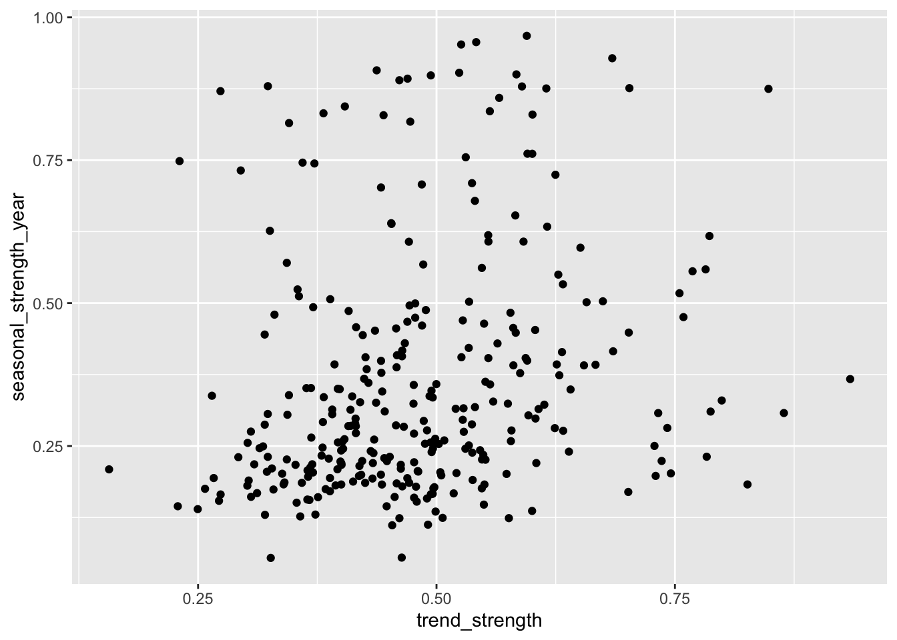

trend_strength seasonal_strength_12 seasonal_peak_12
0.9909550 0.9406725 7.0000000
seasonal_trough_12 spikiness linearity
11.0000000 3.0277699 1325.3317266
curvature stl_e_acf1 stl_e_acf10
131.0646804 0.5091751 0.9303664 Time-series features in feasts
A guide to feature extraction and interpretation
0.1 Overview
The feasts package provides feature extraction and statistical tools for tidy time-series analysis. It is designed to work with tsibble data and with fabletools::features(), making it possible to reduce each time series to a vector of numerical features that describe characteristics such as trend, seasonality, autocorrelation, intermittency, stability, and spectral structure.
This report focuses on features of individual time series rather than the plotting and decomposition facilities of feasts.
The current CRAN release used as the reference here is feasts 0.5.0.
0.2 What is a time-series feature?
A time-series feature is a numerical summary intended to capture some characteristic of a time series.
For example:
- a measure of trend strength describes how much of the variation can be associated with the trend;
- a measure of seasonal strength describes how strongly a repeating seasonal component contributes to the series;
- an autocorrelation feature describes dependence between observations separated by a particular lag;
- spectral entropy describes how concentrated or dispersed the series’ spectral energy is across frequencies;
- lumpiness describes how much the local variance changes over time.
Features are therefore a form of dimension reduction for time-series data. Instead of comparing two long series point-by-point, we can compare their feature vectors.
This is particularly useful in feature-based time-series analysis, where many time series are represented in a common feature space and then explored with graphics or multivariate methods.
0.3 Extracting features with features()
The usual workflow is to supply a list of feature functions to fabletools::features().
For example:
The result contains the identifying variables from the original tsibble together with one or more numerical features for each series.
A useful way to think about the workflow is:
many time series
|
v
feature extraction
|
v
feature matrix
|
+--> visualisation
+--> clustering
+--> dimension reduction
+--> classification
+--> similarity searchFeature extraction does not replace looking at the original series. It provides a compact representation that can be useful for comparing many series.
1 Feature families
The main feature families available in feasts can be grouped as follows.
| Family | Main functions | What they describe |
|---|---|---|
| STL decomposition | feat_stl() |
trend, seasonality, curvature, spikes and residual dependence |
| Autocorrelation | feat_acf() |
serial dependence in the original and differenced series |
| Partial autocorrelation | feat_pacf() |
direct dependence at successive lags |
| Distribution/structure | n_crossing_points(), longest_flat_spot() |
crossings of the median and runs in value intervals |
| Long-range dependence | coef_hurst() |
persistence / fractional differencing |
| Stability | var_tiled_mean(), var_tiled_var() |
change in local level and variance |
| Change points | shift_level_max(), shift_var_max(), shift_kl_max() |
largest local distributional changes |
| Frequency domain | feat_spectral() |
concentration of spectral density |
| Intermittency | feat_intermittent() |
zero occurrence and spacing in intermittent demand |
| Conditional heteroskedasticity | stat_arch_lm() |
ARCH-type dependence in squared observations |
| Stationarity | unitroot_kpss(), unitroot_pp() |
evidence relevant to unit roots |
| Differencing | unitroot_ndiffs(), unitroot_nsdiffs() |
number of ordinary/seasonal differences indicated |
| Residual whiteness | box_pierce(), ljung_box() |
remaining autocorrelation |
| Transformation | guerrero() |
choice of Box–Cox transformation parameter |
Some of these are more naturally thought of as statistical tests or modelling diagnostics than descriptive features. They are nevertheless available through the feature-extraction framework.
2 STL features: feat_stl()
feat_stl() extracts features from an STL decomposition:
[ y_t = T_t + S_t + R_t, ]
where (T_t) is the trend, (S_t) is the seasonal component and (R_t) is the remainder.
The function requires a seasonal period, .period.
2.1 Trend strength
trend_strength measures the strength of the trend relative to the variance remaining after removing the seasonal component.
It is scaled between 0 and 1:
- near 0: little evidence of a systematic trend;
- near 1: most of the remaining variation is associated with the trend.
It is important to remember that this is a feature of the particular decomposition, not a hypothesis test for whether a trend exists.
2.2 Seasonal strength
seasonal_strength_* measures the strength of each seasonal component.
The value is between 0 and 1:
- near 0: weak seasonality;
- near 1: strong seasonality.
For a monthly series with annual seasonality, for example, the feature is based on the seasonal component with period 12.
2.3 Seasonal peak and trough
seasonal_peak_* and seasonal_trough_* identify the position in the seasonal cycle at which the seasonal component reaches its maximum and minimum.
These are useful when two series have similarly strong seasonality but their peaks occur at different times of year.
The interpretation of the numerical position depends on the seasonal period. For example, with .period = 12, the values identify positions in a 12-month cycle.
2.4 Spikiness
spikiness measures variation in the remainder variance. It is based on leave-one-out estimates of the remainder variance.
A large value indicates that the series contains observations that have a large influence on the estimated remainder variance.
Thus, spikiness is better interpreted as instability of the residual variance associated with unusual observations, rather than simply “the number of spikes”.
2.5 Linearity
linearity is obtained from a quadratic approximation to the estimated trend.
It measures the linear component of the trend. A positive value indicates an increasing linear component and a negative value a decreasing component.
Because it is based on the scale of the series and the index, it should generally not be compared directly across series with very different scales without appropriate standardisation.
2.6 Curvature
curvature is the quadratic coefficient from the same approximation.
It captures whether the trend bends rather than following an approximately straight line.
2.7 Residual autocorrelation
feat_stl() also returns:
stl_e_acf1— the lag-1 autocorrelation of the STL remainder;stl_e_acf10— the sum of squared autocorrelations over the first ten lags.
These are useful for identifying series whose STL decomposition has not removed all serial dependence.
3 Autocorrelation features: feat_acf()
Autocorrelation measures the similarity between observations separated by a given lag.
The autocorrelation at lag (k) is
[ k = (y_t,y{t-k}). ]
feat_acf() summarises autocorrelation in the original series and after first and second differencing.
acf1 acf10 diff1_acf1 diff1_acf10 diff2_acf1 diff2_acf10
0.9480473 5.6700871 0.3028553 0.4088376 -0.1910059 0.2507803
season_acf1
0.7603950 The features include:
acf1— lag-1 autocorrelation of the original series;acf10— sum of squared autocorrelations over the first ten lags;diff1_acf1— lag-1 autocorrelation after first differencing;diff1_acf10— summed squared autocorrelations after first differencing;diff2_acf1— lag-1 autocorrelation after second differencing;diff2_acf10— summed squared autocorrelations after second differencing.
For seasonal data, an additional feature is returned:
season_acf— autocorrelation at the first seasonal lag.
3.0.1 Interpretation
A large positive acf1 indicates persistence: adjacent observations tend to be similar.
A large acf10 indicates substantial serial dependence across the first several lags.
The differenced features help distinguish persistence in levels from persistence that remains after removing a trend-like component.
4 Partial autocorrelation: feat_pacf()
The partial autocorrelation function (PACF) measures the association between (y_t) and (y_{t-k}) after accounting for the intermediate lags.
feat_pacf() returns summaries of the first five partial autocorrelations for:
- the original series;
- the first-differenced series;
- the second-differenced series.
For seasonal series it also returns:
season_pacf— the partial autocorrelation at the first seasonal lag.
The squared coefficients are summed, so larger values indicate stronger overall partial autocorrelation over the specified early lags.
pacf5 diff1_pacf5 diff2_pacf5 season_pacf
0.9670971 1.1764357 1.1541896 -0.1354311 PACF features can therefore help distinguish series whose dependence structure is concentrated in a few direct lags from series whose dependence is more diffuse.
5 Crossing points: n_crossing_points()
n_crossing_points() counts how often the series crosses its median.
Conceptually, it asks:
How frequently does the series move from one side of its median to the other?
n_crossing_points
7 A high value indicates frequent oscillation around the centre of the series. A low value can occur when the series spends long periods predominantly above or below its median.
This feature can be useful for distinguishing smooth, slowly changing series from rapidly fluctuating series.
6 Flat spots: longest_flat_spot()
longest_flat_spot() divides the observed value range into ten equal-width intervals and finds the longest consecutive run within any one interval.
longest_flat_spot
18 A large value indicates that the series spends a long time within a relatively narrow portion of its value range.
The feature is therefore related to plateaus or periods of little movement, but it should not be interpreted as a direct estimate of the number of flat periods.
Older versions of feasts used the name n_flat_spots(). This was renamed to longest_flat_spot() because the feature is a maximum run length rather than a count of flat spots.
7 Hurst coefficient: coef_hurst()
The Hurst coefficient is intended to describe long-range dependence or persistence.
coef_hurst
0.9992466 The implementation is based on the fractional differencing parameter (d), with
[ H = d + . ]
Roughly:
- (H ): behaviour consistent with weak dependence;
- (H > 0.5): persistent behaviour;
- (H < 0.5): anti-persistent behaviour.
The Hurst coefficient is not a general-purpose “trend score”. In particular, apparent long-range dependence can be confounded with nonstationarity and other forms of temporal structure.
8 Stability and lumpiness
feasts measures changes in local means and local variances using non-overlapping tiled windows.
8.1 Stability: var_tiled_mean()
var_tiled_mean() calculates the variance of the means of successive windows.
var_tiled_mean
0.9330704 A large value means that the local level changes substantially across the series.
This is called stability in the feature-based time-series literature: a stable series has similar local means over time.
8.2 Lumpiness: var_tiled_var()
var_tiled_var() calculates the variance of the local variances.
var_tiled_var
0.01924803 A large value means that the variability of the series changes substantially from one part of the series to another.
Thus:
- stability concerns changes in local level;
- lumpiness concerns changes in local variance.
The window size is important. When .size is not supplied, it is selected using .period.
9 Local distributional shifts
Three features use sliding windows to identify the largest change between neighbouring portions of the series.
9.1 Level shift: shift_level_max()
shift_level_max() finds the largest difference between local means.
It returns both the magnitude of the largest shift and its location.
shift_level_max shift_level_index
54.5 128.0 A large value indicates a substantial local change in level.
9.2 Variance shift: shift_var_max()
shift_var_max() finds the largest difference between local variances.
shift_var_max shift_var_index
2342.152 118.000 It can identify changes from a relatively stable regime to a highly variable regime, or vice versa.
9.3 Distributional shift: shift_kl_max()
shift_kl_max() compares neighbouring windows using a Kullback–Leibler divergence based on estimated distributions.
shift_kl_max shift_kl_index
0.1210444 122.0000000 A large value indicates a strong change in the estimated local distribution.
Unlike shift_level_max() and shift_var_max(), this is not restricted to changes in a single moment such as the mean or variance.
10 Spectral entropy: feat_spectral()
feat_spectral() measures the entropy of the spectral density.
The spectral density describes how variation in a series is distributed over frequencies.
spectral_entropy
0.2961049 The spectral entropy is based on Shannon entropy:
[ H_s = -_j p_j (p_j), ]
where (p_j) represents the normalised spectral density.
The interpretation is:
- low spectral entropy: spectral energy is concentrated in a relatively small number of frequencies;
- high spectral entropy: spectral energy is spread across many frequencies.
A strongly periodic signal therefore tends to have lower spectral entropy than a series whose variation is distributed broadly across frequencies.
The current implementation estimates the spectral density using stats::spec.ar() with the Burg method.
11 Intermittency: feat_intermittent()
Intermittent time series contain many zero observations, as is common with demand data for products that are ordered only occasionally.
feat_intermittent() returns four features.
zero_run_mean nonzero_squared_cv zero_start_prop zero_end_prop
2.333333 0.280000 0.200000 0.000000 11.1 zero_run_mean
The average interval between non-zero observations.
Large values indicate that demand occurs relatively infrequently.
11.2 nonzero_squared_cv
The squared coefficient of variation of the non-zero observations:
[ CV^2 = ( {(x_{})})^2. ]
It describes the variability of demand when demand occurs, rather than the variability caused by zeros.
11.3 zero_start_prop
The proportion of the series occupied by the initial run of zeros.
11.4 zero_end_prop
The proportion of the series occupied by the final run of zeros.
These features are useful for characterising different kinds of intermittent demand.
12 ARCH statistic: stat_arch_lm()
stat_arch_lm() measures dependence in the squared observations using an ARCH-LM-style statistic.
ARCH effects occur when the conditional variance changes over time in a way related to previous squared observations.
stat_arch_lm
0.9171945 A larger value indicates stronger evidence of dependence in the squared series.
This feature is especially relevant when the interest is in time-varying volatility rather than only changes in the mean.
13 Stationarity and differencing
Some feasts functions provide statistical diagnostics rather than purely descriptive features.
13.1 KPSS test: unitroot_kpss()
The KPSS test is used to assess whether a time series is stationary around a specified deterministic component.
kpss_stat kpss_pvalue
2.739474 0.010000 The function returns a test statistic and an associated p-value.
The interpretation is test-based, so it should not be treated as a continuously scaled descriptive feature in the same way as trend_strength or spectral_entropy.
13.2 Phillips–Perron test: unitroot_pp()
unitroot_pp() provides the Phillips–Perron unit-root test.
pp_stat pp_pvalue
-1.844341 0.100000 It returns the test statistic and p-value.
The KPSS and Phillips–Perron tests have different null hypotheses, so their p-values should not be interpreted as interchangeable measures of stationarity.
13.3 Number of ordinary differences: unitroot_ndiffs()
unitroot_ndiffs() determines the minimum number of ordinary differences required to obtain a series judged stationary according to the supplied unit-root function.
ndiffs
1 The default procedure uses the KPSS p-value.
The result is usually a small integer such as 0, 1, or 2.
13.4 Number of seasonal differences: unitroot_nsdiffs()
unitroot_nsdiffs() similarly estimates the number of seasonal differences required.
nsdiffs
1 The default approach uses seasonal strength from an STL decomposition rather than a formal seasonal unit-root test.
14 Residual autocorrelation tests
14.1 Box–Pierce: box_pierce()
The Box–Pierce test assesses whether a group of autocorrelations is jointly consistent with zero.
It is commonly used as a diagnostic for model residuals.
bp_stat bp_pvalue
129.4263 0.0000 14.2 Ljung–Box: ljung_box()
The Ljung–Box test is a modified version of the portmanteau test that generally has better small-sample behaviour than the original Box–Pierce statistic.
lb_stat lb_pvalue
132.1415 0.0000 These are better regarded as diagnostic tests than as intrinsic descriptive characteristics of a time series.
15 Guerrero’s method: guerrero()
guerrero() is used to choose a Box–Cox transformation parameter.
A Box–Cox transformation is
[ w_t = \begin{cases} \dfrac{y_t^\lambda-1}{\lambda}, & \lambda \ne 0,\\ \log(y_t), & \lambda = 0. \end{cases}]
Guerrero’s method chooses () by seeking a transformation that makes the variability relatively stable across seasonal subseries.
lambda_guerrero
0.1107572 This is therefore a feature-like numerical summary used to guide preprocessing rather than a direct description of the dynamics of the untransformed series.
16 Putting the features together
A broad feature set can be extracted as follows:
The result is a feature matrix, with one row for each time series.
This representation can then be explored using ordinary multivariate methods.
For example:

Or the feature matrix can be standardised before applying dimension reduction or clustering:
17 How to interpret the feature space
A feature vector should not be treated as an objective replacement for the original series.
Two important considerations are:
Features encode particular notions of similarity.
Two series may have very different shapes but similar feature values, or look similar while differing on a feature that captures a property not obvious visually.Many features are dependent on scale, decomposition choices, or tuning parameters.
For example, STL features depend on the seasonal period; tiled features depend on window size; shift features depend on the sliding-window size.
For exploratory analysis, it is therefore useful to combine:
- feature-space visualisation;
- plots of representative original time series;
- knowledge of the data-generating context;
- sensitivity to the feature definitions and tuning parameters.
18 A compact feature dictionary
| Feature | Interpretation |
|---|---|
trend_strength |
Strength of the STL trend, from 0 to 1 |
seasonal_strength_* |
Strength of an STL seasonal component, from 0 to 1 |
seasonal_peak_* |
Position of the seasonal peak |
seasonal_trough_* |
Position of the seasonal trough |
spikiness |
Variation in the estimated remainder variance |
linearity |
Linear component of the estimated trend |
curvature |
Quadratic component of the estimated trend |
stl_e_acf1 |
Lag-1 autocorrelation of the STL remainder |
stl_e_acf10 |
Squared autocorrelation summary of the STL remainder |
acf1 |
Lag-1 autocorrelation |
acf10 |
Squared autocorrelation summary over early lags |
diff1_acf1 |
Lag-1 autocorrelation after first differencing |
diff1_acf10 |
Autocorrelation summary after first differencing |
diff2_acf1 |
Lag-1 autocorrelation after second differencing |
diff2_acf10 |
Autocorrelation summary after second differencing |
season_acf |
Autocorrelation at the first seasonal lag |
pacf5 |
Squared PACF summary over the first five lags |
diff1_pacf5 |
PACF summary after first differencing |
diff2_pacf5 |
PACF summary after second differencing |
season_pacf |
PACF at the first seasonal lag |
n_crossing_points |
Number of crossings of the median |
longest_flat_spot |
Longest run within one of ten value intervals |
coef_hurst |
Hurst coefficient / persistence measure |
stability |
Variance of tiled local means |
lumpiness |
Variance of tiled local variances |
shift_level_max |
Largest local mean shift |
shift_level_index |
Location of the largest level shift |
shift_var_max |
Largest local variance shift |
shift_var_index |
Location of the largest variance shift |
shift_kl_max |
Largest local KL-divergence shift |
shift_kl_index |
Location of the largest distributional shift |
spectral_entropy |
Dispersion of spectral energy across frequencies |
zero_run_mean |
Average spacing between non-zero observations |
nonzero_squared_cv |
Squared CV of non-zero observations |
zero_start_prop |
Proportion in the initial zero run |
zero_end_prop |
Proportion in the final zero run |
arch_lm |
ARCH-type dependence in squared observations |
kpss_stat / kpss_pvalue |
KPSS stationarity diagnostic |
pp_stat / pp_pvalue |
Phillips–Perron unit-root diagnostic |
ndiffs |
Number of ordinary differences indicated |
nsdiffs |
Number of seasonal differences indicated |
bp_stat / bp_pvalue |
Box–Pierce residual autocorrelation diagnostic |
lb_stat / lb_pvalue |
Ljung–Box residual autocorrelation diagnostic |
lambda_guerrero |
Box–Cox parameter selected by Guerrero’s method |
19 Practical cautions
19.1 Features are not automatically comparable
Some features are bounded and naturally comparable, while others depend on the scale of the original series.
For example, trend_strength is bounded between 0 and 1, whereas linearity is not a scale-free quantity.
Before clustering or computing distances between feature vectors, it is usually sensible to inspect the feature distributions and standardise appropriate variables.
19.2 The seasonal period matters
Several features depend explicitly on .period.
For example:
trend_strength seasonal_strength_12 seasonal_peak_12
0.9909550 0.9406725 7.0000000
seasonal_trough_12 spikiness linearity
11.0000000 3.0277699 1325.3317266
curvature stl_e_acf1 stl_e_acf10
131.0646804 0.5091751 0.9303664 and
trend_strength seasonal_strength_6 seasonal_peak_6 seasonal_trough_6
0.9724289 0.5264522 1.0000000 5.0000000
spikiness linearity curvature stl_e_acf1
30.2808961 1327.3029759 126.0163956 0.5386102
stl_e_acf10
1.7831103 describe different decompositions.
The seasonal period should therefore be based on the temporal structure of the data rather than selected simply to make a feature extraction call run.
19.3 Missing values matter
Some features require contiguous observations or use specific handling of missing values. Before extracting a large feature set, it is worth checking missingness and the effective length of each series.
19.4 Feature extraction is exploratory
A feature such as trend_strength = 0.8 does not mean that an 80% probability of a trend has been established.
Likewise, a high spectral_entropy is not a hypothesis test.
The numerical values describe properties induced by particular algorithms and definitions.
20 Suggested workflow for teaching or exploratory analysis
A useful teaching sequence is:
- Plot the original series.
- Identify plausible temporal structure: trend, seasonality, changing variance, intermittency and dependence.
- Extract a small set of interpretable features.
- Visualise the feature distributions.
- Explore relationships among features.
- Use dimension reduction or clustering if there are many series.
- Return to the original time series to interpret interesting groups or outliers.
This makes the feature vector a bridge between time-series graphics and multivariate exploratory analysis, rather than treating feature extraction as an end in itself.
21 References
The feasts package documentation and source code provide the authoritative definitions of the implemented features. The feature framework is closely related to the feature-based time-series analysis literature developed by Hyndman and collaborators.
For the theoretical background to the STL features, see Hyndman and Athanasopoulos, Forecasting: Principles and Practice, section on measuring trend and seasonality strength.
For intermittent-demand features, see Kostenko and Hyndman (2006).
For spectral entropy, see Gibson and Jung (2006) and Goerg (2013).
For the broader feature-based approach, see Hyndman’s discussion of feature-based time-series analysis.